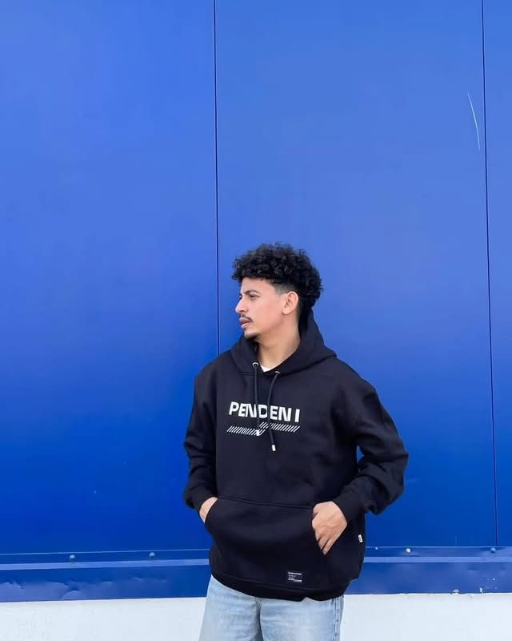
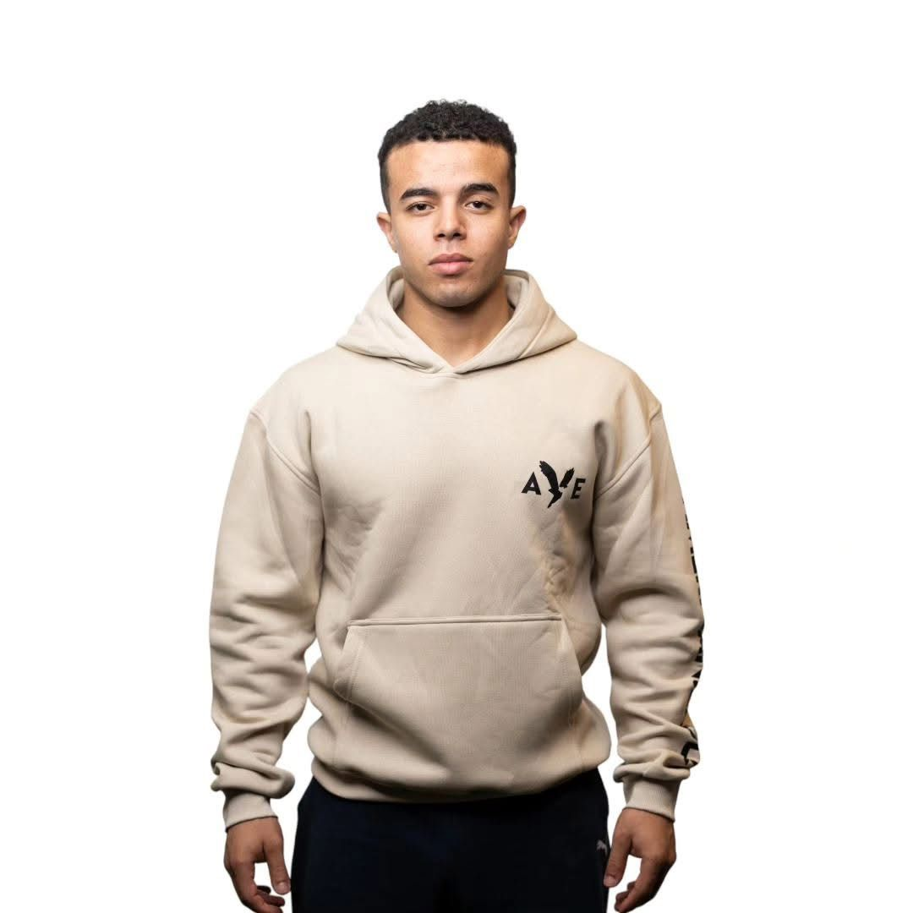
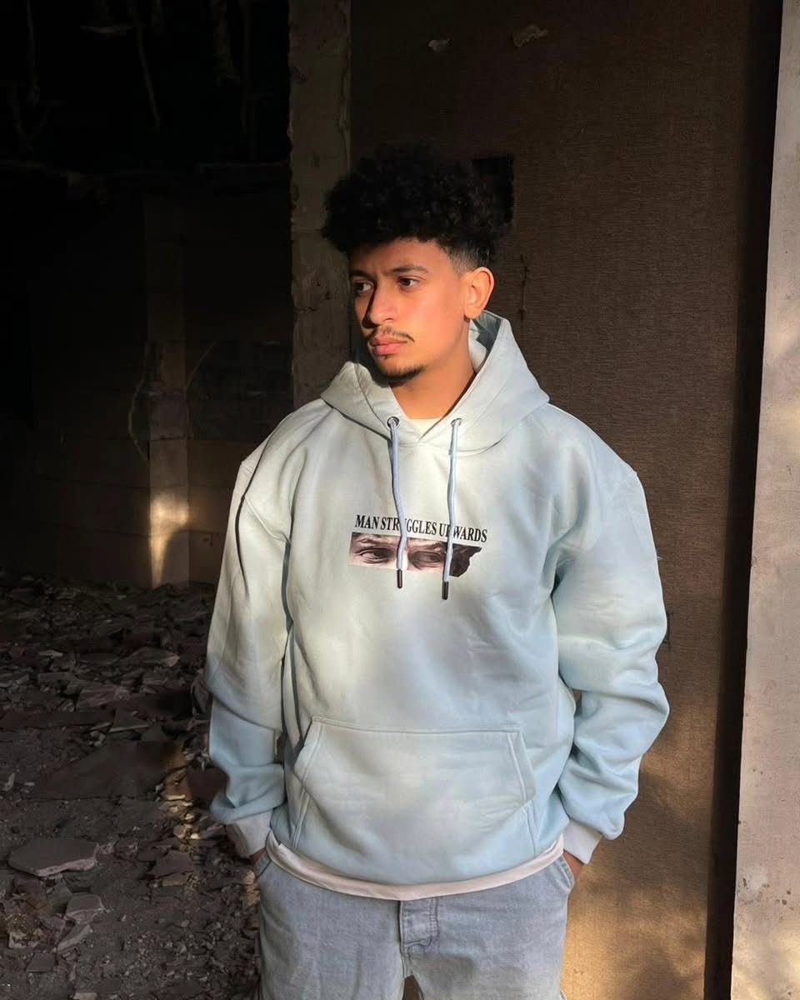
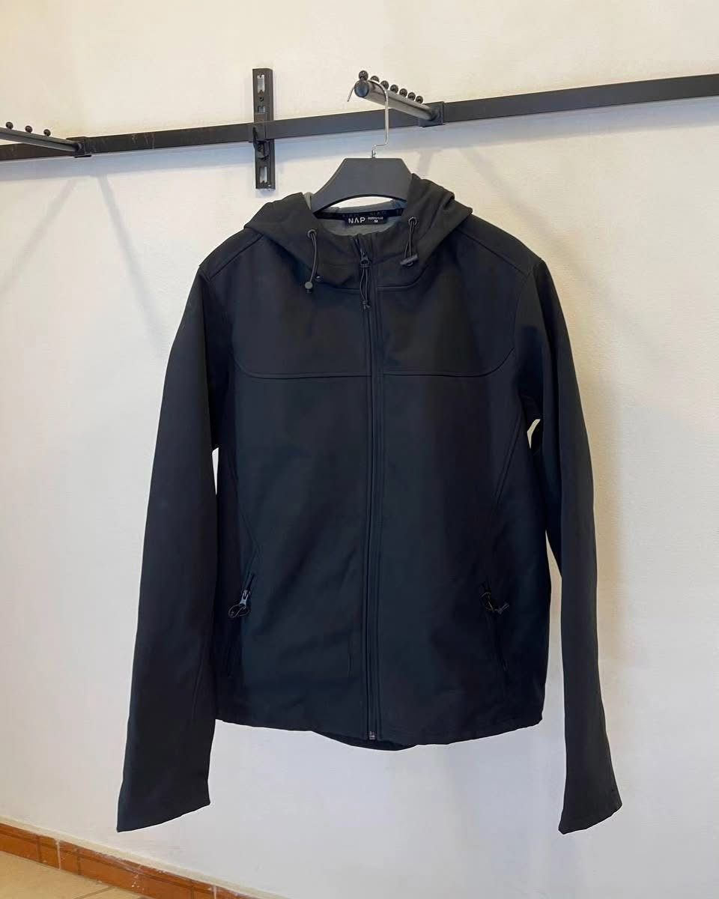
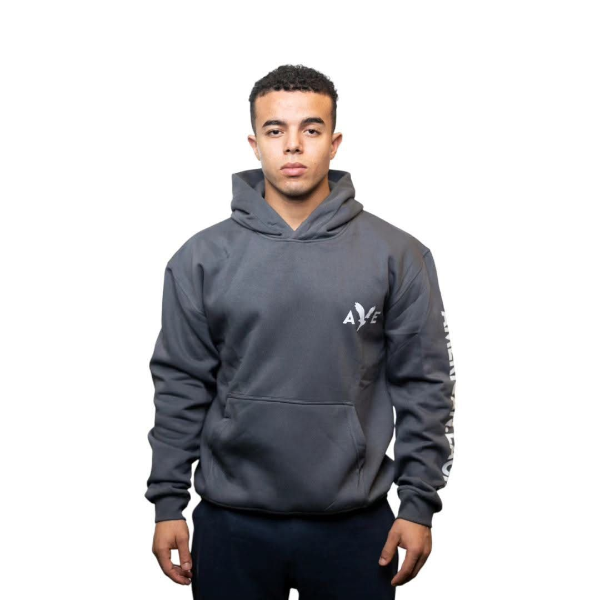
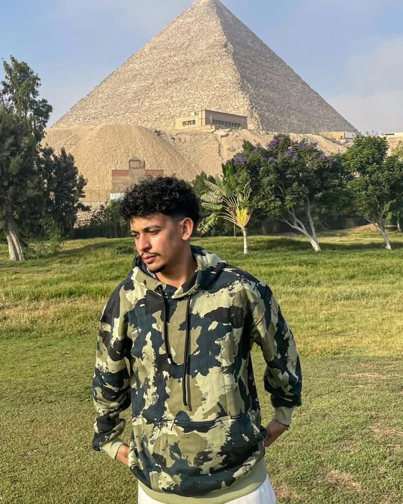

A self-funded fashion brand targeting Egyptian youth. Launched from zero, operated for 12 months, and concluded with documented lessons in business operations, supply chain, and financial planning.
CODA was a youth-oriented clothing brand launched in January 2023 with EGP 40,000 in personal savings. The goal was to offer affordable, trend-aware fashion to Egyptian youth while gaining hands-on experience in running a product-based business from scratch.
The brand operated for 12 months before I made the deliberate decision to close it and redirect my energy toward academic development. The closure was not a failure — it was a documented decision based on identified operational gaps and a strategic reassessment of priorities.
Egyptian youth fashion at the time lacked accessible, locally-curated options at competitive price points. Most available alternatives were either low-quality mass imports or international brands priced out of reach for the student segment.
I saw a gap between what young Egyptian consumers wanted and what was realistically available to them — and decided to test whether a small, curated, locally-run brand could fill it.
Build a sustainable micro-brand in the Egyptian youth fashion market using personal funding, learning real business operations while generating revenue to cover costs.
Secondary objective: develop practical skills in inventory management, customer relations, pricing, and supply chain — skills not covered adequately in academic coursework at that stage.
I managed every function of the business independently — there was no team. This included sourcing and selecting products, setting pricing, managing inventory, handling all customer communications, processing orders, and managing the financials from my initial EGP 40,000 investment.
The experience gave me practical exposure to functions that typically span multiple departments in larger organizations: procurement, sales, customer service, financial management, and logistics.
The project ran for 12 months and generated consistent orders during active seasons (15–30 items per month). More importantly, it produced direct, first-hand experience across multiple business functions that no classroom exercise can replicate.
I concluded the project intentionally — not due to financial collapse — to redirect focus toward academic performance and larger, longer-term opportunities. The experience directly informs how I think about business operations, planning, and HR today.





